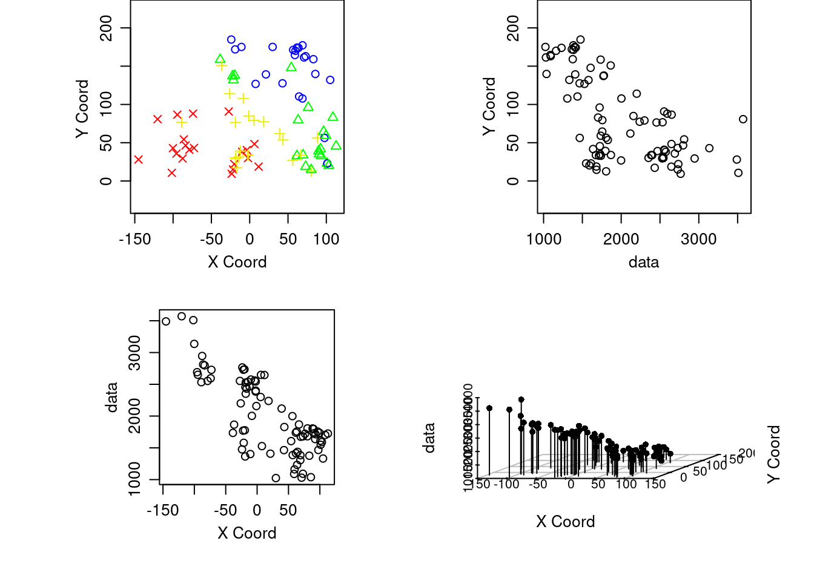

Capítulo 4 Geoestadística univariada con geoR
4.1 Parte descriptiva
4.1.1 Librerías
Lista de librerías con link a la documentación.
rm(list=ls())
library(fields)
library(geoR)
library(akima)4.1.2 Lectura de datos
aquifer <- read.table("data_7_GeoestadisticaGEOSTAT/aquifer.txt", head = TRUE, dec = ",")Encabezado de datos aquifer.txt
head(aquifer)## Este Norte Profundidad
## 1 42.78275 127.62282 1464
## 2 -27.39691 90.78732 2553
## 3 -1.16289 84.89600 2158
## 4 -18.61823 76.45199 2455
## 5 96.46549 64.58058 1756
## 6 108.56243 82.92325 1702Summary de los datos aquifer.txt
summary(aquifer)## Este Norte Profundidad
## Min. :-145.24 Min. : 9.414 Min. :1024
## 1st Qu.: -21.30 1st Qu.: 33.682 1st Qu.:1548
## Median : 11.66 Median : 59.158 Median :1797
## Mean : 16.89 Mean : 79.361 Mean :2002
## 3rd Qu.: 70.90 3rd Qu.:131.825 3rd Qu.:2540
## Max. : 112.80 Max. :184.766 Max. :35714.2 GEO_Data
4.2.1 Convertir aquifer a un objeto geodata (geoR obj)
- Documentación as.geodata
aquiferg <- as.geodata(aquifer)
summary(aquiferg)## Number of data points: 85
##
## Coordinates summary
## Este Norte
## min -145.2365 9.41441
## max 112.8045 184.76636
##
## Distance summary
## min max
## 0.2211656 271.0615463
##
## Data summary
## Min. 1st Qu. Median Mean 3rd Qu. Max.
## 1024.000 1548.000 1797.000 2002.282 2540.000 3571.0004.2.2 Gráfico de objeto geodata
- Documentación plotgeodata
Gráfico del objeto geodata
plot(aquiferg, qt.col = c("purple",
"pink",
"green",
"yellow"))
Gráfico con el parametro 3d
plot(aquiferg, scatter3d = T)
Gráfico removiendo la tendencia (trend )
plot(aquiferg, trend = "1st")
4.2.3 Gráficos descriptivos interpolación
- Documentación Interpolación inderp
- Documentación persp
- Documentación drape.plot
par(mfrow = c(2, 2),
mar = c(3, 3, 1, 1),
mgp = c(2, 1, 0))
# Esta función agrupa los siguientes gráficos en
# una matrix 2x2
grillas <- interp(aquifer$Este,
aquifer$Norte,
aquifer$Profundidad)
persp(grillas$x,
grillas$y,
grillas$z,
xlab = "Este",
ylab = "Norte",
zlab = "Nivel freatico",
phi = 30,
theta = 20,
col = "lightblue",
expand = .5,
ticktype = "detailed")
drape.plot(grillas$x,
grillas$y,
grillas$z,
xlab = "Este",
ylab = "Norte",
zlab = "z",
theta = 45,
col = topo.colors(64),
expand = .5,
ticktype = "detailed")
drape.plot(grillas$x,
grillas$y,
grillas$z,
xlab = "Este",
ylab = "Norte",
zlab = "z",
theta = -10,
col = topo.colors(64),
expand = .5,
ticktype = "detailed")
drape.plot(grillas$x,
grillas$y,
grillas$z,
xlab = "Este",
ylab = "Norte",
zlab = "z",
theta = 60,
col = topo.colors(64),
expand = .5,
ticktype = "detailed")
4.2.4 Gráficos de contorno
- Documentación contour
- Documentación filled.contour
par(mfrow = c(2, 1),
mar = c(1,1,1,1))
contour(grillas, nlevels = 10, main = "Contorno")
image(grillas$z, main = "Grilla")
filled.contour(grillas, levels = seq(1000,
5000,
len = 10),
col = heat.colors(10),
main = "grilla niveles")
4.2.5 Funciones y gráficas a partir de la función outer
h <- seq(0, 1, len = 50)
u <- seq(0, 1, len = 50)
ejemplo1CH <- function(h, u, sigma, a, b, c, d, delta) {
(sigma^2/((a^2*u^2+c)^(d/2)))*exp(-(b^2*h^2)/(a^2*u^2+c))*exp(-delta*u^2)
}
h <- seq(0, 1, len = 20)
u <- seq(1, 10, len = 20)
f <- outer(h, u, ejemplo1CH, sigma=3, a=1, b=3, c=1, d=2, delta=0)
par(mfrow = c(2, 2),
mar = c(3, 3, 1, 1),
mgp = c(2, 1, 0))
drape.plot(h,
u,
f,
main = "Cressie-Huang; 1 (25,1,0.6)",
xlab = "h",
ylab = "u",
zlab = "Covarianza",
ltheta = 75,
col = terrain.colors(64))
drape.plot(h,
u,
f,
main = "Cressie-Huang; 1 (25,1,0.6)",
xlab = "h",
ylab = "u",
zlab = "Covarianza",
theta = -150,
col = terrain.colors(64))
persp(h,
u,
f,
main = "Cressie-Huang; 1 (25,1,0.6)",
xlab = "h",
ylab = "u",
zlab = "Covarianza",
ltheta = 75)
contour(h,
u,
f,
col = topo.colors(10),
xlim = c(0,0.6))
4.3 Modelando la media con regresión polinomial
4.3.1 Primer modelo
reg1 <- lm(Profundidad ~ Este + Norte, data = aquifer)
residuales1 <- residuals(reg1)
summary(reg1)##
## Call:
## lm(formula = Profundidad ~ Este + Norte, data = aquifer)
##
## Residuals:
## Min 1Q Median 3Q Max
## -366.96 -161.53 -30.71 148.15 651.20
##
## Coefficients:
## Estimate Std. Error t value Pr(>|t|)
## (Intercept) 2591.4302 38.9599 66.52 <0.0000000000000002 ***
## Este -6.7514 0.3438 -19.64 <0.0000000000000002 ***
## Norte -5.9872 0.4066 -14.73 <0.0000000000000002 ***
## ---
## Signif. codes: 0 '***' 0.001 '**' 0.01 '*' 0.05 '.' 0.1 ' ' 1
##
## Residual standard error: 203.3 on 82 degrees of freedom
## Multiple R-squared: 0.8921, Adjusted R-squared: 0.8894
## F-statistic: 338.9 on 2 and 82 DF, p-value: < 0.00000000000000022anova(reg1)## Analysis of Variance Table
##
## Response: Profundidad
## Df Sum Sq Mean Sq F value Pr(>F)
## Este 1 19045642 19045642 460.95 < 0.00000000000000022 ***
## Norte 1 8960172 8960172 216.86 < 0.00000000000000022 ***
## Residuals 82 3388069 41318
## ---
## Signif. codes: 0 '***' 0.001 '**' 0.01 '*' 0.05 '.' 0.1 ' ' 14.3.2 Segundo modelo
reg2 <- lm(Profundidad ~ Este + Norte +
I(Este^2) + I(Norte^2) +
I(Este * Norte),
data = aquifer)
residuales2 <- residuals(reg2)
summary(reg2)##
## Call:
## lm(formula = Profundidad ~ Este + Norte + I(Este^2) + I(Norte^2) +
## I(Este * Norte), data = aquifer)
##
## Residuals:
## Min 1Q Median 3Q Max
## -407.43 -138.76 -5.74 128.84 648.16
##
## Coefficients:
## Estimate Std. Error t value Pr(>|t|)
## (Intercept) 2481.430109 68.127017 36.424 < 0.0000000000000002 ***
## Este -8.373708 0.552451 -15.157 < 0.0000000000000002 ***
## Norte -2.043419 1.763832 -1.159 0.250146
## I(Este^2) 0.001417 0.004987 0.284 0.777096
## I(Norte^2) -0.024644 0.009298 -2.650 0.009708 **
## I(Este * Norte) 0.026801 0.007413 3.616 0.000526 ***
## ---
## Signif. codes: 0 '***' 0.001 '**' 0.01 '*' 0.05 '.' 0.1 ' ' 1
##
## Residual standard error: 185.9 on 79 degrees of freedom
## Multiple R-squared: 0.9131, Adjusted R-squared: 0.9076
## F-statistic: 166 on 5 and 79 DF, p-value: < 0.00000000000000022anova(reg2)## Analysis of Variance Table
##
## Response: Profundidad
## Df Sum Sq Mean Sq F value Pr(>F)
## Este 1 19045642 19045642 551.3469 < 0.00000000000000022 ***
## Norte 1 8960172 8960172 259.3855 < 0.00000000000000022 ***
## I(Este^2) 1 55368 55368 1.6028 0.2092235
## I(Norte^2) 1 152170 152170 4.4051 0.0390253 *
## I(Este * Norte) 1 451567 451567 13.0723 0.0005259 ***
## Residuals 79 2728964 34544
## ---
## Signif. codes: 0 '***' 0.001 '**' 0.01 '*' 0.05 '.' 0.1 ' ' 14.3.3 Tercer modelo
reg3 <- lm(Profundidad ~ Este * Norte,
data = aquifer)
residuales3 <- residuals(reg3)
summary(reg3)##
## Call:
## lm(formula = Profundidad ~ Este * Norte, data = aquifer)
##
## Residuals:
## Min 1Q Median 3Q Max
## -406.30 -138.88 -13.04 129.36 722.48
##
## Coefficients:
## Estimate Std. Error t value Pr(>|t|)
## (Intercept) 2627.069474 38.325720 68.546 < 0.0000000000000002 ***
## Este -8.287218 0.565845 -14.646 < 0.0000000000000002 ***
## Norte -6.648559 0.432667 -15.366 < 0.0000000000000002 ***
## Este:Norte 0.024524 0.007401 3.314 0.00138 **
## ---
## Signif. codes: 0 '***' 0.001 '**' 0.01 '*' 0.05 '.' 0.1 ' ' 1
##
## Residual standard error: 191.9 on 81 degrees of freedom
## Multiple R-squared: 0.905, Adjusted R-squared: 0.9014
## F-statistic: 257.1 on 3 and 81 DF, p-value: < 0.00000000000000022anova(reg3)## Analysis of Variance Table
##
## Response: Profundidad
## Df Sum Sq Mean Sq F value Pr(>F)
## Este 1 19045642 19045642 517.06 < 0.00000000000000022 ***
## Norte 1 8960172 8960172 243.25 < 0.00000000000000022 ***
## Este:Norte 1 404448 404448 10.98 0.001379 **
## Residuals 81 2983621 36835
## ---
## Signif. codes: 0 '***' 0.001 '**' 0.01 '*' 0.05 '.' 0.1 ' ' 14.4 Estimación del semivariograma empírico
- Documentación variog
vari2 <- variog(aquiferg, trend = "1st")## variog: computing omnidirectional variogramvari2Cloud <- variog(aquiferg, op = "cloud", trend = "1st")## variog: computing omnidirectional variogramvari2BinCloud <- variog(aquiferg,
max.dist = 200,
op = "cloud",
bin.cloud = TRUE)## variog: computing omnidirectional variogramvari2Sm <- variog(aquiferg,
trend = "1st",
op = "sm",
band=11)## variog: computing omnidirectional variogrampar(mfrow = c(2, 2), mar = c(3, 3, 1, 1), mgp = c(2, 1, 0))
plot(vari2$u, vari2$v, main = "binned variogram") # jocastroc: vari2 solo no da el plot se dejo vari2$u,vari2$v
plot(vari2Cloud$u, vari2Cloud$v, main = "variogram cloud")
plot(vari2BinCloud$u, vari2BinCloud$v, main = "clouds for binned variogram")
plot(vari2Sm$u, vari2Sm$v, main = "smoothed variogram")
4.4.1 Explorando estimación clásica, removiendo tendencia
vari1 <- variog(aquiferg)## variog: computing omnidirectional variogramvari2 <- variog(aquiferg, trend = "1st")## variog: computing omnidirectional variogramvari3 <- variog(aquiferg, trend = "2nd")## variog: computing omnidirectional variogramplot(vari1$u,vari1$v, main = "Sin remover tendencia")plot(vari2$u,vari2$v, main = "Trend 1 ")
plot(vari3$u,vari3$v, main = "Trend 2 ")
4.4.2 Explorando estimación resistente a datos atípicos y removiendo tendencia
vari1 <- variog(aquiferg, estimator.type = "modulus")## variog: computing omnidirectional variogramvari2 <- variog(aquiferg, trend = "1st", estimator.type = "modulus")## variog: computing omnidirectional variogramvari3 <- variog(aquiferg, trend = "2nd", estimator.type = "modulus")## variog: computing omnidirectional variogramplot(vari1$u,vari1$v, main = "Sin remover tendencia")plot(vari2$u,vari2$v, main = "Trend 1 ")
plot(vari3$u,vari3$v, main = "Trend 2 ")
4.4.3 Explorando anisotropía
vari_0 <- variog(aquiferg,
trend = "1st",
max.dist = 200,
dir = 0)## variog: computing variogram for direction = 0 degrees (0 radians)
## tolerance angle = 22.5 degrees (0.393 radians)vari_45 <- variog(aquiferg,
trend = "1st",
max.dist = 200,
dir = pi / 4)## variog: computing variogram for direction = 45 degrees (0.785 radians)
## tolerance angle = 22.5 degrees (0.393 radians)vari_90 <- variog(aquiferg,
trend = "1st",
max.dist = 200,
dir = pi / 2)## variog: computing variogram for direction = 90 degrees (1.571 radians)
## tolerance angle = 22.5 degrees (0.393 radians)vari_135 <- variog(aquiferg,
trend = "1st",
max.dist = 200,
dir = 3 * pi / 4)## variog: computing variogram for direction = 135 degrees (2.356 radians)
## tolerance angle = 22.5 degrees (0.393 radians)par(mfrow = c(2, 2),
mar = c(3, 3, 1, 1),
mgp = c(2, 1, 0))
plot(vari_0$u,vari_0$v, main = "vari 0")
plot(vari_45$u,vari_45$v, main = "vari 45")
plot(vari_90$u,vari_90$v, main = "vari 90")
plot(vari_135$u,vari_135$v, main = "vari 195")
4.5 Estimación teórica del semivariograma
var1 <- variog(aquiferg,trend="1st",max.dist=200)## variog: computing omnidirectional variogram#ini1 <- eyefit(var1)
#cov.model sigmasq phi tausq kappa kappa2 practicalRange
#1 wave 30805.52 13 8984.94 <NA> <NA> 38.8889336320589
ini1 <- c(30805.52, 13)
fitvar1 <- variofit(var1,
cov.model = "wave",
ini1,
fix.nugget = TRUE,
nugget = 8984.94,
wei = "equal")## variofit: covariance model used is wave
## variofit: weights used: equal
## variofit: minimisation function used: optimfitvar2 <- variofit(var1,
cov.model = "wave",
ini1,
fix.nugget = TRUE,
nugget = 8984.94,
wei = "npairs")## variofit: covariance model used is wave
## variofit: weights used: npairs
## variofit: minimisation function used: optimfitvar3 <- variofit(var1,
ini1,
fix.nugget = TRUE,
nugget = 8984.94,
wei = "cressie")## variofit: covariance model used is matern
## variofit: weights used: cressie
## variofit: minimisation function used: optimfitvar4 <- likfit(aquiferg,
coords = aquiferg$coords,
data = aquiferg$data,
trend = "1st",
ini.cov.pars = ini1,
fix.nugget = T,
nugget = 8984.94,
cov.model = "wave",
lik.method = "ML")## kappa not used for the wave correlation function
## ---------------------------------------------------------------
## likfit: likelihood maximisation using the function optim.
## likfit: Use control() to pass additional
## arguments for the maximisation function.
## For further details see documentation for optim.
## likfit: It is highly advisable to run this function several
## times with different initial values for the parameters.
## likfit: WARNING: This step can be time demanding!
## ---------------------------------------------------------------
## likfit: end of numerical maximisation.fitvar5 <- likfit(aquiferg,
coords = aquiferg$coords,
data = aquiferg$data,
trend = "1st",
ini.cov.pars = ini1,
fix.nugget = T,
nugget = 8984.94,
cov.model = "wave",
lik.method = "REML")## kappa not used for the wave correlation function
## ---------------------------------------------------------------
## likfit: likelihood maximisation using the function optim.
## likfit: Use control() to pass additional
## arguments for the maximisation function.
## For further details see documentation for optim.
## likfit: It is highly advisable to run this function several
## times with different initial values for the parameters.
## likfit: WARNING: This step can be time demanding!
## ---------------------------------------------------------------
## likfit: end of numerical maximisation.plot(var1$u,var1$v,
xlab = "h",
ylab = "semivarianza",
cex.lab = 1.3,
cex.axis = 1.2,
main = "Estimación teórica del modelo de semivariograma",
col.main = 4, cex.main =1.3)
lines(fitvar1, col = 1)
lines(fitvar2, col = 2)
lines(fitvar3, col = 3)
lines(fitvar4, col = 4)
lines(fitvar5, col = 5)
legend(130, 18000,
c("MCO", "MCPnpairs", "MCPcressie", "ML", "REML"),
lwd = 2,
lty = 2:7,
col = 2:7,
box.col = 9,
text.col = 2:7)4.6 Resultados
summary(fitvar1)## $pmethod
## [1] "OLS (ordinary least squares)"
##
## $cov.model
## [1] "wave"
##
## $spatial.component
## sigmasq phi
## 31203.33666 11.93873
##
## $spatial.component.extra
## kappa
## 0.5
##
## $nugget.component
## tausq
## 8984.94
##
## $fix.nugget
## [1] TRUE
##
## $fix.kappa
## [1] TRUE
##
## $practicalRange
## [1] 35.71419
##
## $sum.of.squares
## value
## 159338722
##
## $estimated.pars
## sigmasq phi
## 31203.33666 11.93873
##
## $weights
## [1] "equal"
##
## $call
## variofit(vario = var1, ini.cov.pars = ini1, cov.model = "wave",
## fix.nugget = TRUE, nugget = 8984.94, weights = "equal")
##
## attr(,"class")
## [1] "summary.variomodel"summary(fitvar2)## $pmethod
## [1] "WLS (weighted least squares)"
##
## $cov.model
## [1] "wave"
##
## $spatial.component
## sigmasq phi
## 31311.81333 12.05997
##
## $spatial.component.extra
## kappa
## 0.5
##
## $nugget.component
## tausq
## 8984.94
##
## $fix.nugget
## [1] TRUE
##
## $fix.kappa
## [1] TRUE
##
## $practicalRange
## [1] 36.07688
##
## $sum.of.squares
## value
## 32922890311
##
## $estimated.pars
## sigmasq phi
## 31311.81333 12.05997
##
## $weights
## [1] "npairs"
##
## $call
## variofit(vario = var1, ini.cov.pars = ini1, cov.model = "wave",
## fix.nugget = TRUE, nugget = 8984.94, weights = "npairs")
##
## attr(,"class")
## [1] "summary.variomodel"summary(fitvar3)## $pmethod
## [1] "WLS (weighted least squares)"
##
## $cov.model
## [1] "matern"
##
## $spatial.component
## sigmasq phi
## 32541.18204 22.69704
##
## $spatial.component.extra
## kappa
## 0.5
##
## $nugget.component
## tausq
## 8984.94
##
## $fix.nugget
## [1] TRUE
##
## $fix.kappa
## [1] TRUE
##
## $practicalRange
## [1] 67.99426
##
## $sum.of.squares
## value
## 26.97852
##
## $estimated.pars
## sigmasq phi
## 32541.18204 22.69704
##
## $weights
## [1] "cressie"
##
## $call
## variofit(vario = var1, ini.cov.pars = ini1, fix.nugget = TRUE,
## nugget = 8984.94, weights = "cressie")
##
## attr(,"class")
## [1] "summary.variomodel"summary(fitvar4)## Summary of the parameter estimation
## -----------------------------------
## Estimation method: maximum likelihood
##
## Parameters of the mean component (trend):
## beta0 beta1 beta2
## 2723.1654 -7.1140 -6.9505
##
## Parameters of the spatial component:
## correlation function: wave
## (estimated) variance parameter sigmasq (partial sill) = 30806
## (estimated) cor. fct. parameter phi (range parameter) = 12.11
## anisotropy parameters:
## (fixed) anisotropy angle = 0 ( 0 degrees )
## (fixed) anisotropy ratio = 1
##
## Parameter of the error component:
## (fixed) nugget = 8984.94
##
## Transformation parameter:
## (fixed) Box-Cox parameter = 1 (no transformation)
##
## Practical Range with cor=0.05 for asymptotic range: 36.2227
##
## Maximised Likelihood:
## log.L n.params AIC BIC
## "-572.8" "5" "1156" "1168"
##
## non spatial model:
## log.L n.params AIC BIC
## "-570.8" "4" "1150" "1159"
##
## Call:
## likfit(geodata = aquiferg, coords = aquiferg$coords, data = aquiferg$data,
## trend = "1st", ini.cov.pars = ini1, fix.nugget = T, nugget = 8984.94,
## cov.model = "wave", lik.method = "ML")summary(fitvar5)## Summary of the parameter estimation
## -----------------------------------
## Estimation method: restricted maximum likelihood
##
## Parameters of the mean component (trend):
## beta0 beta1 beta2
## 2723.0308 -7.1143 -6.9479
##
## Parameters of the spatial component:
## correlation function: wave
## (estimated) variance parameter sigmasq (partial sill) = 30806
## (estimated) cor. fct. parameter phi (range parameter) = 12.16
## anisotropy parameters:
## (fixed) anisotropy angle = 0 ( 0 degrees )
## (fixed) anisotropy ratio = 1
##
## Parameter of the error component:
## (fixed) nugget = 8984.94
##
## Transformation parameter:
## (fixed) Box-Cox parameter = 1 (no transformation)
##
## Practical Range with cor=0.05 for asymptotic range: 36.38468
##
## Maximised Likelihood:
## log.L n.params AIC BIC
## "-553.2" "5" "1116" "1129"
##
## non spatial model:
## log.L n.params AIC BIC
## "-552.1" "4" "1112" "1122"
##
## Call:
## likfit(geodata = aquiferg, coords = aquiferg$coords, data = aquiferg$data,
## trend = "1st", ini.cov.pars = ini1, fix.nugget = T, nugget = 8984.94,
## cov.model = "wave", lik.method = "REML")